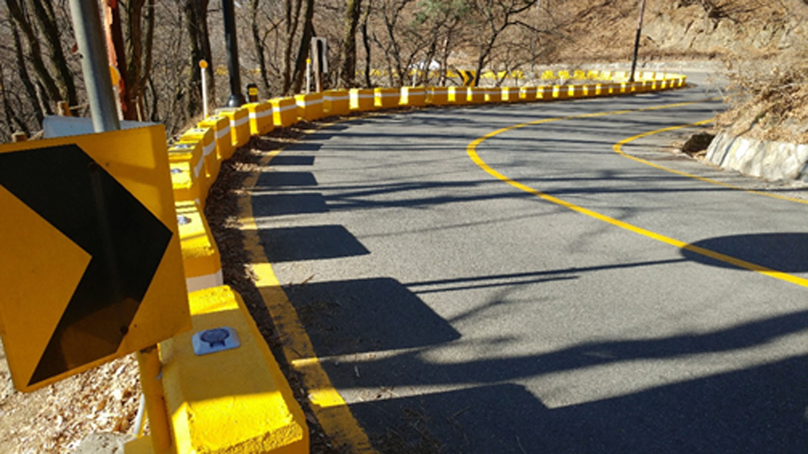
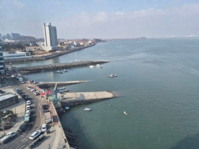
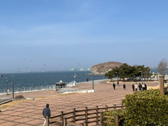

My Drive Courses
와인딩 코스

북악스카이웨이(서울시 종로구)
서울에서 접근성이 좋고 노면이 안정적입니다.

남한산성(경기도 광주시)
근교에서 접근성이 좋은 편이지만 낭떠러지가 있어 운전 시 주의가 필요합니다.

중미산(경기도 양평군)
서울양평고속도로를 통해 접근하고, 과속 방지턱이 적어 운행하기 쾌적합니다.

한계령(강원도 인제군)
급커브가 심한 편이고 경사가 매우 가파르니 브레이크 열을 관리하면서 주행해야 합니다.
경치 코스

구읍뱃터(인천광역시 영종구)
인천공항 인근이라 접근성이 좋고, 탁 트인 바다 앞에서 디저트를 먹으면 하루의 피로가 사라집니다.

시화나래휴게소(경기도 안산시)
푸른 바다 앞 휴게소이고, 한강 라면 자판기가 있어 바다 앞에서 라면 먹으며 멍때리면 좋습니다.

삽교호(충청남도 당진시)
바다 앞에 놀이공원이 있고, 야경이 멋져서 차 사진을 찍으면 예쁘게 나옵니다.